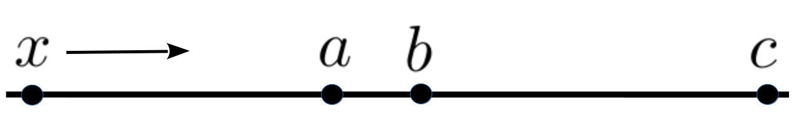

Section12.1Horizontal Asymptotes as Limits at Infinity
\TLogo{PSP:lhopitals-rule}
In our fishery model in the previous chapter we referred to the carrying capacity of the lake, \(P=100\text{,}\) as an asymptote. Loosely speaking, an asymptote is a line that the graph of a function gets close to. Any line can be an asymptote but we will be primarily interested in horizontal asymptotes (lines like the graph of \(y=5\)) and vertical asymptotes (lines like the graph of \(x=5\)).
Take another look at the graph of the Witch of Agnesi below. You can readily see that, as \(x\) moves to the right \(y\) gets closer and closer to zero. This is the essential idea but the phrase closer and closer is too vague for our purpose.
Heres why. In the sketch below, \(x\) is moving to the right. As you can see \(x\) gets closer and closer to \(a\text{.}\) But it also gets closer and closer to both \(b\) and \(c\text{.}\)

While \(x\) is getting closer and closer to all three of \(a\text{,}\)\(b\text{,}\) and \(c\) it is only getting arbitrarily close to \(a\text{,}\) and arbitrarily close is what we usually mean when we say closer and closer. When \(x\) is getting arbitrarily close to \(a\) we say that \(x\) approaches \(a\) and we write \(x\rightarrow a\text{.}\)
It is clear that the graph of the Witch comes arbitrarily close to the line \(y=0\) so we write \(y\rightarrow0\) as \(x\rightarrow\infty\text{.}\) This is spoken aloud as \(y\) approaches zero as \(x\) approaches infinity.
Subsection12.1.1Limit Notation
Of course, the notion of approaching infinity is troublesome as well. That we speak in this fashion has more to do with the construction of the English language than with the mathematics we want to represent. If \(y\) is proceeding toward zero (an actual number) it makes sense to say \(y\) approaches zero. The notation \(y\rightarrow0\) captures this idea nicely. And since we usually pronounce the symbol \(\infty\) as infinity it feels natural to write \(x\rightarrow\infty\) and to speak this aloud as \(x\) approaches infinity as if \(\infty\) is a place we could get to. But as weve observed, this is absurd. Properly speaking the symbols \(x\rightarrow\infty\) should be spoken aloud as \(x\) increases without bound, but nearly everyone says \(x\) approaches infinity instead because it is a less cumbersome phrase. Like so much of mathematics this is perfectly clear once the underlying ideas have been internalized, but in the beginning it is can be quite confusing. Be patient with yourself.
An alternative, and more common notation is: \(\tlimit{x}{\infty}{\frac{1}{1+x^2}}=0\) which we read aloud as The limit as \(x\) approaches infinity of one over one plus \(x\) squared is equal to zero but this also collides with the construction of the English language. From the discussion above we know that \(x\rightarrow\infty\)" indicates that \(x\) increases without bound, but when we write \(\tlimit{x}{\infty}{\frac{1}{1+x^2}}=0\) what exactly does \(=0\) mean? What is equal to zero? Certainly the Witch is never equal to zero since its graph never crosses (or even touches) the \(x\) axis.
The expression \(\tlimit{x}{\infty}{\frac{1}{1+x^2}}=0\) is making a very specific statement, one that is difficult to capture in a natural language like English. It says that the expression \(\frac{1}{1+x^2}\) is approaching a particular value (zero) as \(x\) approaches \(\infty\text{.}\) The equals sign doesnt indicate that the function, \(\frac{1}{1+x^2}\) actually equals that value. Instead it is the limit of \(\frac{1}{1+x^2}\) which is equal to zero. Whether the function itself is ever equal to the limit, or not, is irrelevant. Were interested in what it gets arbitrarily close to.
We are treading at the edge of some very deep waters here so we will not attempt to address all of the nuances yet. Instead we will simply interpret the formula \(\tlimit{x}{\infty}{\frac{1}{1+x^2}}=0\) to mean that as \(x\) approaches infinity (\(x\rightarrow\infty\)) the expression \(\frac{1}{1+x^2}\) approaches zero \(\left(\frac{1}{1+x^2}\rightarrow0\right)\text{.}\)
In Chapter17 we will replace arbitrarily close with something much more precise. Indeed, finding a better way to say arbitrarily close will be the culmination of our efforts. This is what will allow us to finally replace differentials with a solid theoretical foundation.
But for now, we have enough to give our first definition of the limit concept.
Definition12.1.1.1.An Intuitive Definition of a Limit at \(\pm\infty\).
If, as \(x\rightarrow\infty\text{,}\)\(f(x)\) gets arbitrarily close to some number \(A\text{,}\) we write
As weve observed, for very large positive values of \(x\text{,}\) the function \(W(x)=\frac{1}{1+x^2}\) will be close to zero (the larger the \(x\) value, the closer \(\frac{1}{1+x^2}\) is to zero). Likewise, for very large, negative values of \(x\text{,}\)\(W(x)\) will also get close to zero so:
We used the Witch for our first example because we are quite familiar with its properties from our earlier investigations. However we neednt have started with so complex a function.
Problem12.1.1.3.
Use the graph of \(f(x)=\frac1x\) to argue that \(\tlimit{x}{\infty}{\frac1x}=0\) and \(\tlimit{x}{-\infty}{\frac1x}=0\text{.}\)
The limit concept is deeply abstract. We are introducing it here because, (1) the limit idea gives us a handy way to define asymptotes, and (2) when we return to in in Chapter17 it will be helpful if you are comfortable with the notation and the essential underlying idea.
We have the following definition.
Definition12.1.1.4.Horizontal Asymptotes.
If \(\limit{x}{\infty}{f(x)}=A\) then the graph of the function \(f(x)\) has the horizontal asymptote, \(y=A.\)
If \(\limit{x}{-\infty}{f(x)}=B\) then the graph of the function \(f(x)\) has the horizontal asymptote, \(y=B.\)
as in the next three theorems.
In Definition12.1.1.4 it will frequently be true that \(A\) and \(B\) are the same number. In that case we express both limits in the more compact form: \(\limit{x}{\pm\infty}{f(x)}=A
\text{.}\)
Drill12.1.1.5.
(a)
Justify the following assertion as clearly and as carefully as you can: \(\tlimit{x}{\infty}{5}=5
\text{.}\)
(b)
Generalize the statement in part (a).
From Drill12.1.1.5 we know \(\tlimit{x}{\infty}{5}=5\) and from Problem12.1.1.3 we know that \(\limitatinf{x}{\frac1x}=0.\) Does it follow that
This can be expressed in words with the phrase The limit of a quotient is the quotient of the limits.
Example12.1.1.9.
Notice that in Theorem12.1.1.8 we specifically required that \(\limit{x}{\infty}{g(x)}=M\neq0\text{.}\) This is necessary because, as we stated quite emphatically in Digression: Dividing by Zero, division by zero is an undefined concept. Thus if \(\limit{x}{\infty} {f(x)}\) is equal to, say \(1\text{,}\) and \(\limit{x}{\infty}{g(x)}=0\) then
\begin{equation*}
\frac{\tlimit{x}{\infty}{f(x)}}{\tlimit{x}{\infty}{g(x)}}
\text{ appears
to be equal to }
\frac{1}{0}.
\end{equation*}
But this is meaningless, so we say that \(\limit{x}{\infty} {\frac{f(x)}{g(x)}}\) does not exist, or equivalently that it is undefined.
Like the differentiation rules, when these limit theorems are used together they allow us to break a large problem into smaller, more tractable, pieces. Here are some examples.
Example12.1.1.10.
Wed like to find the horizontal asymptotes of \(y=\frac{2}{x}-\frac{3}{x^2}\) if any exist. In this example we will write down all of the details of our computation. As you get more comfortable, you will probably abbreviate the process by doing much of this in your head. Thats good, but also be sure you can fill in all of the details when needed. You will need to be comfortable with all of the details when the problems get more complex. From Definition12.1.1.4 we see that if horizontal asymptotes exist they will be the lines \(y=\limit{x}{\infty}{\left(\frac{2}{x}-\frac{3}{x^2}\right)}\) and \(y=\limit{x}{-\infty}{\left(\frac{2}{x}-\frac{3}{x^2}\right)}\) so we need to evaluate these limits. For the first limit we see from Theorem12.1.1.6 that
Evaluate \(\tlimit{x}{\infty}{\frac{x-1}{x}}\) to find the other asymptote, if it exists.
Drill12.1.1.14.
Find the horizontal asymptotes of the graphs of the following functions.
(a)
\(y=5\)
(b)
\(y=\frac{1}{x-2}+3\)
(c)
\(y=\frac{3x-5}{x-2}\)
(d)
\(y=\frac{\abs{x}}{x-1}\)
Of course, not every curve has a horizontal asymptote so not every function has a limit as \(x\) approaches \(\pm\infty\text{.}\) For example, consider the curves \(y=x^2\) and \(y=x^3.\)
Clearly these curves have no horizontal asymptotes because as \(x\rightarrow\pm\infty\) they dont get close to a real number. In fact they either continue to rise or continue to drop as \(x\rightarrow\pm\infty\text{.}\)
But once again we need to keep in mind that the symbol \(\infty\) does not represent a number so saying that something is equal to \(\infty\) is meaningless.
is that as \(x\) increases without bound \(x\) squared increases without bound.
Problem12.1.1.15.
Similarly \(\limit{x}{-\infty}{x^3}=-\infty\) means that as \(x\rightarrow-\infty\)\(x^3\rightarrow-\infty\text{.}\) How would we say this in words?
Example12.1.1.16.
It is especially important to keep in mind that \(\infty\) is not a number when evaluating a limit like: \(\limit{x}{\infty}{(x^3-21x^2)}.\)
It is very tempting to attack this problem by noticing that each term is increasing without bound and write \(\infty-\infty=0,\) but in fact this limit is not zero. Can you see what the limit is? Give it some thought and take your best guess. Well come back to it shortly.
It is very clear that the limit: \(\limit{x}{\infty}{(x-x)}\) is zero. After all, \(x-x\) is constantly equal to zero so we have \(\limit{x}{\infty}{(x-x)} = \limit{x}{\infty}{0} = 0\text{.}\) So it seems to be clear that \(\limit{x}{\infty}{(x-x)} = \infty-\infty =
0\text{.}\) Anything minus itself has to be zero doesnt it? Even grandmother - grandmother must be zero, right?
But now consider this limit: \(\limit{x}{\infty}{[(x+7)-(x-5)]}\text{.}\) Both \((x+7)\rightarrow\infty\) and \((x-5)\rightarrow\infty\) so \(\limit{x}{\infty}{\left[(x+7)-(x-5)\right]}\) also has the form \(\infty-\infty\) doesnt it? But \((x+7)-(x-5)\) is constantly equal to \(12\) so, we have
Thus it appears that \(\infty-\infty\) can be zero, and that \(\infty-\infty\) can be \(12\text{.}\) But \(0\neq12\) so that cant be! Moreover there is nothing special about \(12\text{.}\) We could have chosen any number to make our point. So we conclude that \(\infty-\infty\) is meaningless. Equivalently, we say it is undefined.
The source of the difficulty here is that only numbers can be subtracted. But neither \(\infty\) nor grandmother is a number so the expressions \(\infty-\infty\) and grandmother - grandmother are utter nonsense.
Problem12.1.1.17.
Find two functions, \(f(x)\) and \(g(x)\) such that as \(x\rightarrow\infty\) both \(f(x)\rightarrow\infty\) and \(g(x)\rightarrow\infty\) but \(\limit{x}{\infty}{\left[f(x)-g(x)\right]}\) is equal to each of the following.
\(\displaystyle 10\)
\(\displaystyle -21\)
\(\displaystyle 83,744\)
\(\displaystyle \pi\)
\(\displaystyle \sqrt{2}\)
An arbitrary real number
Limits can be deceptive so be careful. It can be helpful to have built in notational cues to remind ourselves that these are subtle problems. When we are working with limits we will use the notation \(\approach{\infty}\) to remind ourselves that \(\infty\) is not a number.
Returning to the limit \(\limit{x}{\infty}{(x^3-21x^2)} \) and using this notational cue we have
This says that this limit consists of something which is approaching \(\infty\) (increasing without bound) minus something else which is approaching \(\infty\) (again, increasing without bound). When we say it like this more importantly when we think about it like this we can see that the value of the limit will depend upon precisely how the two parts increase without bound.
We now know that this limit is not necessarily equal to zero, but how can we discover what it actually is equal to? As in much of Calculus we need to re-express our formulas algebraically to see what is going on.
Rewriting \(x^3-21x^2\) as \(x^3\left(1-\frac{21}{x}\right)\) we have
which says that we have an expression which is increasing without bound multiplied by an expression which approaches the number one. Obviously the product will also increase without bound so we write \(\limit{x}{\infty}{(x^3-21x^2)}=\infty.\)
Next we consider the limit \(\limit{x}{-\infty}{(x^3+21x^2)}\)
This makes sense intuitively. We would expect that for large values of \(x\) (either positive or negative), \(x^3\) will continually outgrow (approach infinity faster than) \(21x^2\text{.}\)
We have established that, because \(\infty\) is not a number, the expression \(\infty-\infty\) does not make sense. What about \(\frac{\infty}{\infty}\text{?}\) Is it true that \(\frac{\infty}{\infty}=1\text{?}\)
No, of course not. The expression \(\frac{\infty}{\infty}\) is meaningless for the same reason that \(\infty\) - \(\infty\) is meaningless.
Example12.1.1.18.
Consider \(\limit{x}{\infty}{\frac{x^4+x^2}{5x^4-100x}}\text{.}\) It is tempting to write \(\frac{\infty}{\infty}=1\text{,}\) but as we have observed, \(\infty\) is not a number so this makes no more sense than \(\infty-\infty=0\text{.}\)
Once again, the key is to re-express the function algebraically. Factoring out the highest power of the variable from both the numerator and the denominator we see that
You may well ask, How did we know to factor out the highest power of the variable? The answer is very unsatisfying. We were taught this technique by our teachers, just as you are being taught now. Wed have been hard pressed to come up with it on our own.
Example12.1.1.19.(Continued from Section10.1 ).
Recall that we did not complete Example10.1.0.6 because we did not previously have any way to determine what happens to the graph of \(y(x)=\frac{2+2x^2+2x^4}{1+x^4}\) as \(x\rightarrow\infty\) or as \(x\rightarrow-\infty\text{.}\) We do now. Finding what happens to the graph of \(y(x)=\frac{2+2x^2+2x^4}{1+x^4}\) as \(x\rightarrow\infty\) or as \(x\rightarrow-\infty\) is equivalent to evaluating the following limits:
\begin{equation*}
\limit{x}{\infty}{\frac{2+2x^2+2x^4}{1+x^4}}\ \ \text{ and }
\limit{x}{-\infty}{\frac{2+2x^2+2x^4}{1+x^4.}}
\end{equation*}
We will evaluate the first one and leave the second as a drill. Proceeding as in Example12.1.1.18 we see that
Show that \(\tlimit{x}{-\infty}{\frac{2+2x^2+2x^4}{1+x^4}}\) is also equal to two.
We can now see that \(y(x)=\frac{2+2x^2+2x^4}{1+x^4}\) has a horizontal asymptote at \(y=2\text{.}\) If you havent already done so consider graphing this function to confirm.
Problem12.1.1.21.
Show that each of the following statements is true.
Do you think the function \(y(x) = \sqrt{x^2+2}-\sqrt{x^2+x}\) has any horizontal asymptotes? Take your best guess before we begin this example. To find any horizontal asymptotes we have to evaluate the two limits
First well find the limit as \(x\rightarrow\infty\) and leave the limit as \(x\rightarrow-\infty\) as a drill for you.
As always the trick is to rearrange this expression inside the limit algebraically without changing its value until we can see clearly what happens as \(x\rightarrow\infty\text{.}\) The square roots seem to be the difficulty here. So wed like to find a way to make them go away. The standard trick for this is to multiply by the conjugate of \(\sqrt{x^2+2}-\sqrt{x^2+x}\text{,}\) namely \(\sqrt{x^2+2}+\sqrt{x^2+x}\text{.}\)
Of course, if we do that then we need to divide by the conjugate as well. That way weve multiplied by \(1\) and have not changed the value of the expression. This wont actually eliminate the square roots as we will still have them in the denominator. But lets see what happens.
But were evaluating a limit as \(x\rightarrow\infty\text{.}\) So, were really only interested in large, positive values of \(x\text{.}\) In this case \(\abs{x}=x\) so
Did you guess right? If you did, either you have a very strong intuition for these kinds of problems or you just had a moment of blind luck. So dont just pat yourself on the back and walk away. Be sure to take a moment to figure out whether it was intuition or luck. You dont want to confuse them.
If you guessed wrong, or (most likely) were unable to come up with a guess dont fret about it. Youre normal. But be sure you review and understand the steps to this solution so you can begin to build some intuition about such problems. This problem looked pretty intimidating, but once we got going in the right direction, it was all Algebra from there. Notice how the absolute value came into play. In this problem it wasnt an issue since we were considering only positive values of \(x\text{.}\) But consider what would happen if \(x\) was negative, if \(x\rightarrow-\infty\text{.}\) In this case, \(\abs{x}=-x.\)
This is important. If you dont see why \(\abs{x}=-x\) when \(x\lt0\) ask your teacher about it.
DIGRESSION: The Absolute Value Function.
It is not true that \(\sqrt{x^2}=x\text{,}\) although this is an easy mistake to make. It is not true because the square root function, \(\sqrt{x}\text{,}\) is the functional inverse of the function
\begin{equation*}
f(x)=x^2, \text{ with domain } x\ge0.
\end{equation*}
Note that the domain restriction means that \(\sqrt{x}\) always returns a positive number. Thus \(\sqrt{2^2} = 2\text{,}\) but \(\sqrt{(-2)^2} = 2\text{,}\) also. Similarly,
\begin{equation*}
\sqrt{3^2}=\sqrt{(-3)^2}=3,\
\sqrt{10^2}=\sqrt{(-10)^2}=10, \text{ and in general }
\sqrt{x^2}=\abs{x}.
\end{equation*}
When \(x\) is negative \(\sqrt{x^2}=-x\) because when \(x\) negative \(-x\) is positive.
END OF DIGRESSION
Problem12.1.1.23.
Try to guess the value of \(\limit{x}{-\infty}{ \left( \sqrt{x^2+2}-\sqrt{x^2+x} \right)} \) and then evaluate the limit to see if you guessed correctly.